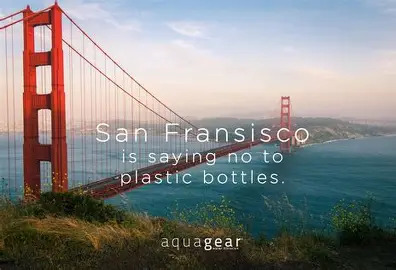
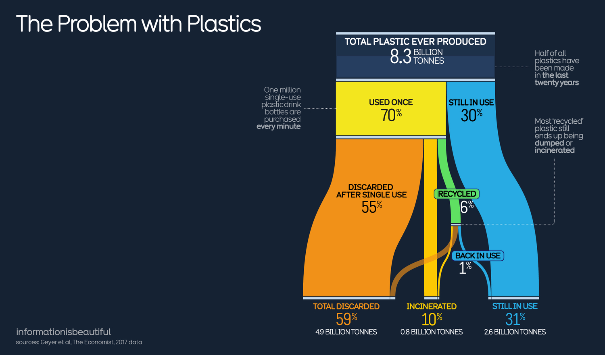

By 2050, cities will look drastically different. As urban populations continue to grow, sustainable tech and connected infrastructure redefine how people interact with their surroundings.
A main part of this transformation is the integration of plastic-free practices into urban planning and daily life.
^ Click image for San Francisco official website
